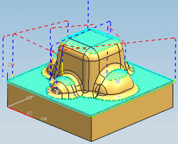
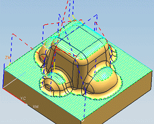
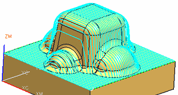
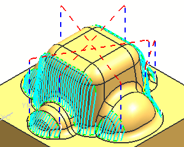
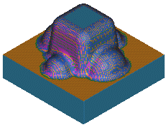
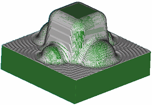

Functions used for the area mill project
In this project you will:
-
Create a CONTOUR_AREA utilizing the NON_STEEP containment operation to semi-finish the part.

-
Create a MILL_AREA parent group containing a Trim Boundary.

-
Apply the MILL_AREA geometry group as a parent to the CONTOUR_AREA operation to eliminate edge tracing.

-
Create a CONTOUR_AREA operation using the MILL_AREA geometry group to finish the part.

-
Create a CONTOUR_AREA with a DIRECTIONAL STEEP containment operation that finishes only the steep areas.

-
Create a CONTOUR_AREA operation to finish the core with a very small stepover.
-
Use Verify Tool Path to simulate material removal for the entire program.

-
Compare the finished machined part to the original model.
